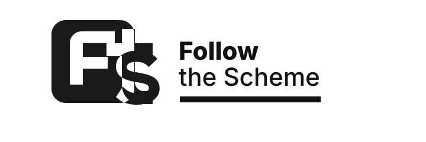
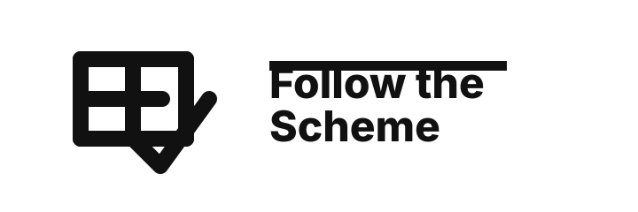
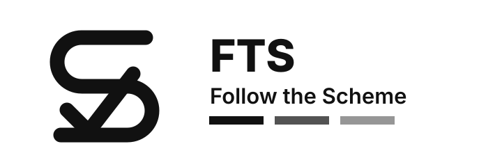

Logo Mockups
Monochrome-first explorations for Follow the Scheme. Each concept is designed to be recognizable without relying on color.


Monochrome-first explorations for Follow the Scheme. Each concept is designed to be recognizable without relying on color.


